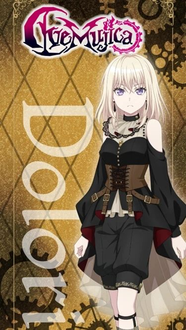

Ave Mujica
About band
Ave Mujica adalah sebuah band musik fiksi yang muncul dalam permainan ritme populer "BanG Dream!" Dikembangkan oleh Craft Egg dan diterbitkan oleh Bushiroad, band ini terdiri dari lima anggota perempuan yang masing-masing memiliki kepribadian dan latar belakang unik. Nama "Ave Mujica" menggabungkan kata Latin "Ave," yang berarti "salut" atau "halo," dengan nama keluarga "Mujica," menciptakan identitas yang menarik bagi band ini. Dalam permainan, pemain dapat menikmati berbagai lagu yang dibawakan oleh Ave Mujica, serta mengikuti cerita dan interaksi antar anggota band. Band ini telah mendapatkan popularitas di kalangan penggemar musik dan budaya pop Jepang, menjadikannya salah satu elemen ikonik dalam dunia "BanG Dream!"


